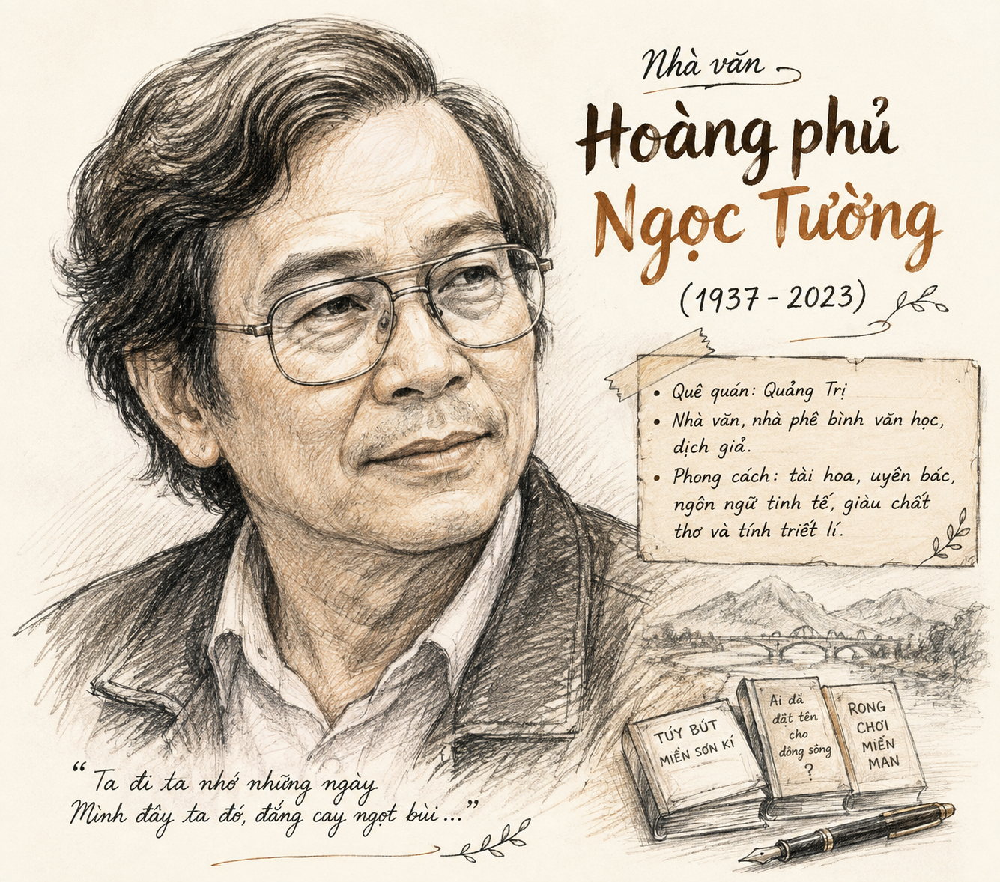
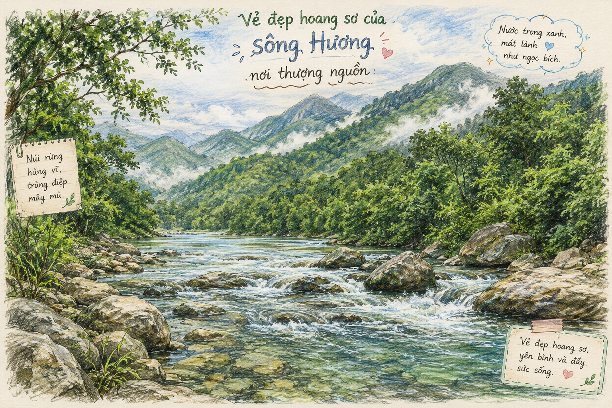

"Bạn có kỷ niệm gì với dòng sông mà bạn từng biết? Hãy chia sẻ ấn tượng của bạn về hình ảnh một dòng sông được tái hiện trong tác phẩm văn học hoặc các loại hình nghệ thuật khác (âm nhạc, hội họa, điện ảnh,...)."
• Năm sinh: 1937 tại thành phố Huế, quê gốc ở huyện Triệu Phong, tỉnh Quảng Trị.
• Phong cách nghệ thuật: Là nhà văn có sở trường đặc biệt về thể loại ký, trong đó tùy bút là thể loại in đậm dấu ấn sáng tạo. Ký của ông nổi bật ở chất tài hoa, lịch lãm; suy tư sâu sắc về văn hóa, lịch sử cùng ngôn ngữ mềm mại, tinh tế, liên tưởng bất ngờ.
• Tác phẩm chính: Rất nhiều ánh lửa (1979), Ai đã đặt tên cho dòng sông? (1984), Hoa trái quanh tôi (1995), Ngọn núi ảo ảnh (1999)...

[ Khung hình minh họa h1.png: Chân dung nhà văn Hoàng Phủ Ngọc Tường ]• Xuất xứ: Trích từ tập ký cùng tên xuất bản năm 1984. Xét theo đặc điểm nội dung và hình thức nghệ thuật, tác phẩm mang đậm tính chất thể loại tùy bút.
• Bố cục đoạn trích: Thuộc phần thứ nhất của bài tùy bút, tập trung miêu tả vẻ đẹp tự nhiên, lịch sử, văn hóa và thi ca của sông Hương.
• Sông Hương mang bản thể một "bản trường ca của rừng già": rầm rộ giữa bóng cây đại ngàn, mãnh liệt qua những ghềnh thác, cuộn xoáy như cơn lốc vào những đáy vực bí ẩn.
• Hình ảnh so sánh nhân hóa: Sông Hương sống một nửa cuộc đời như một "cô gái Di-gan phóng khoáng và man dại" với bản lĩnh gan dạ, tâm hồn tự do và trong sáng.
• Khi ra khỏi rừng, sức mạnh bản năng được chế ngự để dòng sông nhanh chóng trở thành "người mẹ phù sa của một vùng văn hóa xứ sở" với vẻ đẹp dịu dàng và trí tuệ.

[ Khung hình minh họa h2.png: Vẻ đẹp hoang sơ của sông Hương nơi thượng nguồn ]• Hành trình trôi chảy như một "cuộc tìm kiếm có ý thức" người tình mong đợi để đến với kinh thành tương lai.
• Dòng chảy biến chuyển liên tục: vòng những khúc quanh đột ngột, uốn mình theo những đường cong thật mềm từ ngã ba Tuần, qua điện Hòn Chén, Ngọc Trản, Nguyệt Biều, Lương Quán rồi ôm lấy chân đồi Thiên Mụ.
• Sắc nước biến đổi diệu kỳ: "sớm xanh, trưa vàng, chiều tím" do mảng phản quang của đám quần sơn lô xô quanh thành phố.
• Mang vẻ đẹp "trầm mặc nhất, như triết lý, như cổ thi" gắn liền với giấc ngủ nghìn năm của các vua chúa trong lăng tẩm đồ sộ và tiếng chuông chùa Thiên Mụ ngân nga.
• Tâm trạng: Sông Hương dường như "vui tươi hẳn lên" khi nhận ra chiếc cầu trắng của thành phố in ngần trên nền trời.
• Đường cong mềm mại: Uốn một cánh cung rất nhẹ sang Cồn Hến, được ví như "một tiếng 'vâng' không nói ra của tình yêu".
• Lưu tốc: Trôi đi chậm, thực chậm, cơ hồ chỉ còn là một mặt hồ yên tĩnh. Tác giả gọi đó là "điệu slow tình cảm dành riêng cho Huế".
• Sự gắn bó văn hóa: Sông Hương chính là môi trường sinh thành ra toàn bộ nền âm nhạc cổ điển Huế; đồng thời vô cùng luyến lưu khi đổi dòng rẽ ngoặt ở góc thị trấn Bao Vinh trước khi ra biển.
• Góc nhìn Lịch sử: Sông Hương là dòng sông của sử thi viết giữa màu cỏ lá xanh biếc. Từng là Linh Giang bảo vệ biên giới phía Nam thời Hùng Vương, soi bóng kinh thành Phú Xuân thời Nguyễn Huệ, chứng kiến các cuộc khởi nghĩa thế kỷ XIX và chiến công Cách mạng tháng Tám.
• Góc nhìn Thi ca: Sông Hương là dòng sông không bao giờ tự lặp lại mình trong cảm hứng nghệ sĩ:
| Góc nhìn / Không gian | Hình ảnh & Tính chất đặc trưng | Nghệ thuật thể hiện |
|---|---|---|
| Thượng nguồn | Bản trường ca rừng già, Cô gái Di-gan phóng khoáng & man dại | So sánh, Nhân hóa mãnh liệt |
| Ngoại vi Huế | Người tình mong đợi, tấm lụa mềm, sắc nước biến đổi | Ấn tượng thị giác, Liên tưởng đa chiều |
| Trong lòng phố Huế | Điệu slow tình cảm, người tài nữ đánh đàn lúc đêm khuya | Đối sánh quốc tế, Cảm nhận âm nhạc |
| Lịch sử & Thi ca | Dòng sông anh hùng, thi hứng không bao giờ tự lặp lại | Tích hợp tri thức đa ngành |
Tác phẩm thể hiện vẻ đẹp toàn diện, vừa thơ mộng vừa hào hùng của sông Hương, đồng thời gửi gắm tình yêu thiết tha, niềm tự hào sâu sắc của nhà văn dành cho xứ Huế và quê hương đất nước.
Thể loại tùy bút tài hoa; chất trữ tình đậm đà; ngôn ngữ giàu hình ảnh và âm điệu; các biện pháp nhân hóa, so sánh, liên tưởng độc đáo cùng tri thức văn hóa, lịch sử phong phú.
Có một huyền thoại kể rằng: Dân làng Thành Trung bên bờ sông Hương vì quá yêu quý dòng sông quê hương nên đã nấu nước của trăm loài hoa đổ xuống dòng nước, để từ đó nước sông mãi mãi tỏa hương thơm. Câu chuyện huyền thoại đầy thi vị này chính là một cách giải thích giàu chất thơ cho câu hỏi bâng khuâng: "Ai đã đặt tên cho dòng sông?".
Viết đoạn văn (khoảng 150 chữ) phân tích một hình ảnh độc đáo được tác giả sử dụng để làm nổi bật nét riêng của sông Hương (Ví dụ: hình ảnh "cô gái Di-gan phóng khoáng và man dại" hoặc "điệu slow tình cảm dành riêng cho Huế").
Khi đọc hiểu thể loại tùy bút, cần chú ý đến cái "tôi" trữ tình của tác giả: tính chất tự do, tài hoa trong liên tưởng; chất trữ tình hòa quyện với trí tuệ; sự kết hợp linh hoạt giữa ghi chép thực tế và tưởng tượng sáng tạo. Công thức đánh giá tính cân bằng văn học: \( \text{Cảm xúc} \xrightleftharpoons \text{Tri thức} \).
Thử thách 10 câu hỏi kiểm tra kiến thức, hiểu và vận dụng bài học!
Bài tập 1: Phân tích hiệu quả nghệ thuật của phép nhân hóa khi tác giả miêu tả sông Hương ở thượng nguồn là "cô gái Di-gan phóng khoáng và man dại".
Lời giải chi tiết:
• Liên tưởng độc đáo: Người Di-gan là tộc người du cư phóng khoáng, yêu tự do và đầy nhiệt huyết. Phép nhân hóa này giúp hình dung sông Hương không chỉ là dòng chảy địa lý mà là một sinh thể mang sức sống hoang dại, tự do giữa đại ngàn Trường Sơn.
• Làm nổi bật tính cách: Dòng sông vừa mãnh liệt qua ghềnh thác, vừa cuộn xoáy bí ẩn, vừa dịu dàng say đắm giữa sắc đỏ hoa đỗ quyên.
• Tạo tiền đề phát triển: Sự phóng khoáng nơi thượng nguồn đối lập nhưng tôn lên nét dịu dàng, trí tuệ khi dòng sông ra khỏi rừng trở thành "người mẹ phù sa".
Bài tập 2: Tại sao tác giả lại khẳng định: "Toàn bộ nền âm nhạc cổ điển Huế đã được sinh thành trên mặt nước của dòng sông này"?
Lời giải chi tiết:
• Môi trường diễn xướng đặc thù: Âm nhạc Huế (như Ca Huế, Tứ đại cảnh) được sinh ra trong không gian sông nước tĩnh lặng, trên những khoang thuyền êm đềm đêm khuya.
• Sự cộng hưởng âm thanh: Tiếng nước rơi "bán âm" của mái chèo khuya chính là nhịp điệu tự nhiên nuôi dưỡng và định hình nên các bản đàn dịu êm, vắng lặng, đong đầy nỗi niềm tâm sự.
• Nội hàm văn hóa: Khẳng định mối quan hệ hữu cơ gắn kết khăng khít không thể tách rời giữa thiên nhiên (sông Hương) và di sản văn hóa phi vật thể (âm nhạc cổ điển Huế).
Bài tập 3: Hãy giải thích ý nghĩa triết lý và tình cảm sâu sắc qua câu hỏi nhan đề "Ai đã đặt tên cho dòng sông?".
Lời giải chi tiết:
• Hình thức: Câu hỏi bâng khuâng nhưng ẩn chứa nhu cầu bái vọng, khám phá đến tận cùng nguồn cội vẻ đẹp dòng sông.
• Ý nghĩa huyền thoại & lịch sử: Nhắc nhớ huyền thoại nhân dân nấu nước trăm loài hoa đổ xuống để sông mãi thơm. Qua đó ca ngợi những con người đã gầy dựng, bảo vệ và thổi tâm hồn vào vùng đất xứ Huế.
• Bày tỏ tình cảm: Thể hiện sự ngỡ ngàng, ngưỡng mộ và tình yêu da diết của tác giả đối với vẻ đẹp thơ mộng, biến hóa diệu kỳ của dòng sông quê hương.